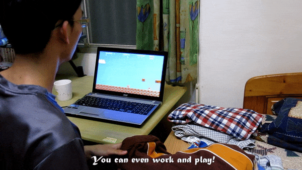
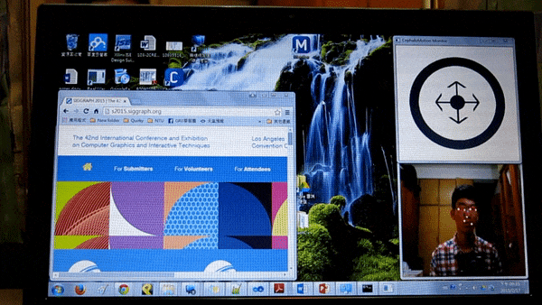
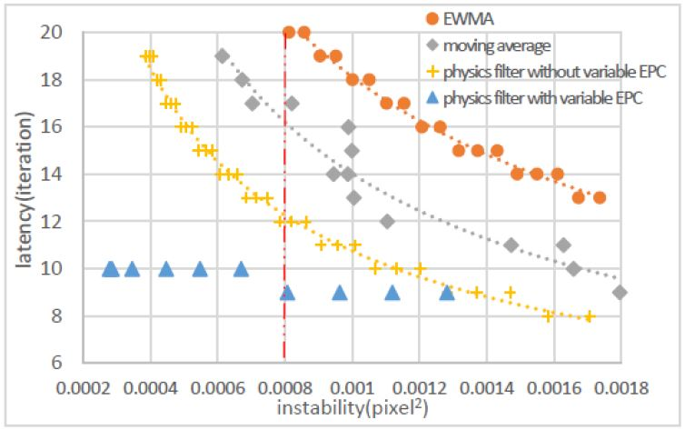
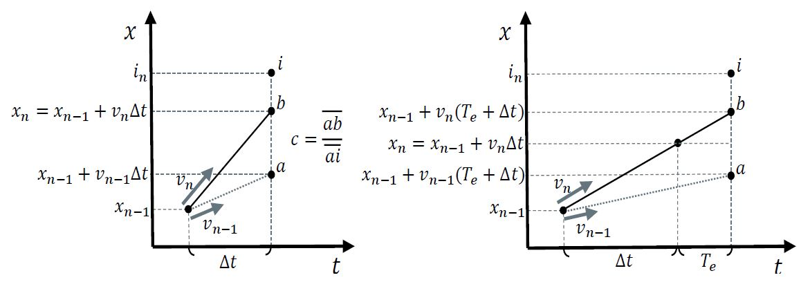
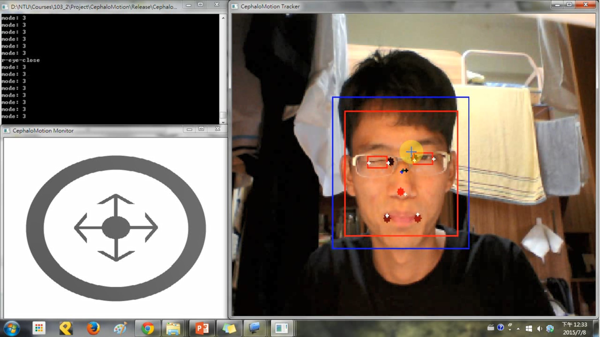

My Roles
Researcher
Developer
Team
Size: 3
I conducted this research project with the guidance of a PhD student and the supervision of a professor. I was responsible for carrying out all aspects of the work.
Tools and Languages
C++
OpenCV
My Contributions and Artefacts
Multimodal System
Designed and developed the multimodal system to be purely controlled by the head and the eyes, designed and tuned algorithms to detect head gestures and support the various modes, and integrated third-party libraries.
Mastered tuning variables for gesture detection and learned to modify then integrate others' work into my own.


Cursor Control & Sensor Data Filter
Conceived a novel filter for smoothing data from the webcam to enable cursor control with the head and iterated on filter design to enhance user experience.
Learned to use the fact that users need higher cursor precision only when its speed is low to design a top-performing filter for the use case.



Eye Open/Close State Detection
Realized eye open/close states detection by analyzing intensity changes of pixels around the eyes.
Learned to use value changes to detect events instead of using absolute values because the latter will often fail when the environment changes.
